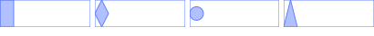
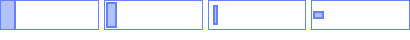
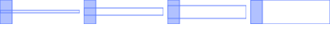
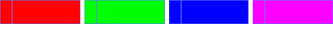
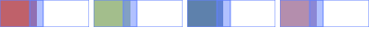
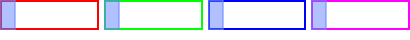

Module: wibox.widget.slider
An interactive mouse based slider widget.

Usage:
wibox.widget {
bar_shape = gears.shape.rounded_rect,
bar_height = 3,
bar_color = beautiful.border_color,
handle_color = beautiful.bg_normal,
handle_shape = gears.shape.circle,
handle_border_color = beautiful.border_color,
handle_border_width = 1,
value = 25,
widget = wibox.widget.slider,
}
Info:
- Copyright: 2015 Grigory Mishchenko, 2016 Emmanuel Lepage Vallee
- Author: Grigory Mishchenko <grishkokot@gmail.com>,Emmanuel Lepage Vallee <elv1313@gmail.com>
Constructors
| wibox.widget.slider {[args]} | Create a slider widget. | |
Object properties
| handle_shape | gears.shape | The slider handle shape. | |
| handle_color | color | The slider handle color. | |
| handle_margins | table | The slider handle margins. | |
| handle_width | number | The slider handle width. | |
| handle_border_color | color | The handle border_color. | |
| handle_border_width | number | The handle border width. | |
| bar_shape | gears.shape | The bar (background) shape. | |
| bar_height | number | The bar (background) height. | |
| bar_color | color | The bar (background) color. | |
| bar_active_color | color | The bar (active) color. | |
| bar_margins | table | The bar (background) margins. | |
| bar_border_width | number | The bar (background) border width. | |
| bar_border_color | color | The bar (background) border_color. | |
| value | number | The slider value. | |
| minimum | number | The slider minimum value. | |
| maximum | number | The slider maximum value. | |
| children | table | Get or set the children elements. | Inherited from wibox.widget |
| all_children | table | Get all direct and indirect children widgets. | Inherited from wibox.widget |
| forced_height | number or nil | Force a widget height. | Inherited from wibox.widget |
| forced_width | number or nil | Force a widget width. | Inherited from wibox.widget |
| opacity | number | The widget opacity (transparency). | Inherited from wibox.widget |
| visible | boolean | The widget visibility. | Inherited from wibox.widget |
| buttons | table | The widget buttons. | Inherited from wibox.widget |
Object methods
| :setup {[args]} | Set a declarative widget hierarchy description. | Inherited from wibox.widget |
| :add_button (button) | Add a new awful.button to this widget. | Inherited from wibox.widget |
| :emit_signal_recursive (signal_name, ...) | Emit a signal and ensure all parent widgets in the hierarchies also forward the signal. | Inherited from wibox.widget |
| :emit_signal (name, ...) | Emit a signal. | Inherited from gears.object |
| :connect_signal (name, func) | Connect to a signal. | Inherited from gears.object |
| :weak_connect_signal (name, func) | Connect to a signal weakly. | Inherited from gears.object |
Signals
| widget::layout_changed | When the layout (size) change. | Inherited from wibox.widget |
| widget::redraw_needed | When the widget content changed. | Inherited from wibox.widget |
| button::press | When a mouse button is pressed over the widget. | Inherited from wibox.widget |
| button::release | When a mouse button is released over the widget. | Inherited from wibox.widget |
| mouse::enter | When the mouse enter a widget. | Inherited from wibox.widget |
| mouse::leave | When the mouse leave a widget. | Inherited from wibox.widget |
Theme variables
| beautiful.slider_bar_border_width | number | The bar (background) border width. | |
| beautiful.slider_bar_border_color | color | The bar (background) border color. | |
| beautiful.slider_handle_border_color | color | The handle border_color. | |
| beautiful.slider_handle_border_width | number | The handle border width. | |
| beautiful.slider_handle_width | number | The handle width. | |
| beautiful.slider_handle_color | color | The handle color. | |
| beautiful.slider_handle_shape | gears.shape | The handle shape. | |
| beautiful.slider_bar_shape | gears.shape | The bar (background) shape. | |
| beautiful.slider_bar_height | number | The bar (background) height. | |
| beautiful.slider_bar_margins | table | The bar (background) margins. | |
| beautiful.slider_handle_margins | table | The slider handle margins. | |
| beautiful.slider_bar_color | color | The bar (background) color. | |
| beautiful.slider_bar_active_color | color | The bar (active) color. | |
Constructors
- wibox.widget.slider {[args]}
-
Create a slider widget.
Parameters:
- args table (default {})
Object properties
- handle_shape (gears.shape) · 1 signals · 1 theme variables
-
The slider handle shape.

See also:
Click to display more Emit signals:
property::handle_shapeWhen the handle_shape value changes.selfwibox.widget.slider The object which changed (useful when connecting many object to the same callback).new_valueshapeThe new value affected to the property.
Consumed theme variables:
Theme variable Usage beautiful.slider_handle_shape Fallback when handle_shape isn't set. - handle_color (color) · 1 signals · 1 theme variables
-
The slider handle color.
Click to display more Emit signals:
property::handle_colorWhen the handle_color value changes.selfwibox.widget.slider The object which changed (useful when connecting many object to the same callback).new_valuehandle_color The new value affected to the property.
Consumed theme variables:
Theme variable Usage beautiful.slider_handle_color Fallback when handle_color isn't set. - handle_margins (table) · 1 signals · 1 theme variables
-
The slider handle margins.

Click to display more Emit signals:
property::handle_marginsWhen the handle_margins value changes.selfwibox.widget.slider The object which changed (useful when connecting many object to the same callback).new_valuemarginsThe new value affected to the property.
Consumed theme variables:
Theme variable Usage beautiful.slider_handle_margins Fallback when handle_margins isn't set. - handle_width (number) · 1 signals · 1 theme variables
-
The slider handle width.
Click to display more Emit signals:
property::handle_widthWhen the handle_width value changes.selfwibox.widget.slider The object which changed (useful when connecting many object to the same callback).new_valuehandle_width The new value affected to the property.
Consumed theme variables:
Theme variable Usage beautiful.slider_handle_width Fallback when handle_width isn't set. - handle_border_color (color) · 1 signals · 1 theme variables
-
The handle border_color.
Click to display more Emit signals:
property::handle_border_colorWhen the handle_border_color value changes.selfwibox.widget.slider The object which changed (useful when connecting many object to the same callback).new_valuehandle_border_color The new value affected to the property.
Consumed theme variables:
Theme variable Usage beautiful.slider_handle_border_color Fallback when handle_border_color isn't set. - handle_border_width (number) · 1 signals · 1 theme variables
-
The handle border width.
Click to display more Emit signals:
property::handle_border_widthWhen the handle_border_width value changes.selfwibox.widget.slider The object which changed (useful when connecting many object to the same callback).new_valuehandle_border_width The new value affected to the property.
Consumed theme variables:
Theme variable Usage beautiful.slider_handle_border_width Fallback when handle_border_width isn't set. - bar_shape (gears.shape) · 1 signals · 1 theme variables
-
The bar (background) shape.
See also:
Click to display more Emit signals:
property::bar_shapeWhen the bar_shape value changes.selfwibox.widget.slider The object which changed (useful when connecting many object to the same callback).new_valueshapeThe new value affected to the property.
Consumed theme variables:
Theme variable Usage beautiful.slider_bar_shape Fallback when bar_shape isn't set. - bar_height (number) · 1 signals · 1 theme variables
-
The bar (background) height.

Click to display more Emit signals:
property::bar_heightWhen the bar_height value changes.selfwibox.widget.slider The object which changed (useful when connecting many object to the same callback).new_valuebar_height The new value affected to the property.
Consumed theme variables:
Theme variable Usage beautiful.slider_bar_height Fallback when bar_height isn't set. - bar_color (color) · 1 signals · 1 theme variables
-
The bar (background) color.

Click to display more Emit signals:
property::bar_colorWhen the bar_color value changes.selfwibox.widget.slider The object which changed (useful when connecting many object to the same callback).new_valuebar_color The new value affected to the property.
Consumed theme variables:
Theme variable Usage beautiful.slider_bar_color Fallback when bar_color isn't set. - bar_active_color (color) · 1 signals · 1 theme variables
-
The bar (active) color.

Only works when both bar_active_color and bar_color are passed as hex color string
Click to display more Emit signals:
property::bar_active_colorWhen the bar_active_color value changes.selfwibox.widget.slider The object which changed (useful when connecting many object to the same callback).new_valuebar_active_color The new value affected to the property.
Consumed theme variables:
Theme variable Usage beautiful.slider_bar_active_color Fallback when bar_active_color isn't set. - bar_margins (table) · 1 signals · 1 theme variables
-
The bar (background) margins.
Click to display more Emit signals:
property::bar_marginsWhen the bar_margins value changes.selfwibox.widget.slider The object which changed (useful when connecting many object to the same callback).new_valuemarginsThe new value affected to the property.
Consumed theme variables:
Theme variable Usage beautiful.slider_bar_margins Fallback when bar_margins isn't set. - bar_border_width (number) · 1 signals
-
The bar (background) border width.
Click to display more Emit signals:
property::bar_border_widthWhen the bar_border_width value changes.selfwibox.widget.slider The object which changed (useful when connecting many object to the same callback).new_valuebar_border_width The new value affected to the property.
- bar_border_color (color) · 1 signals · 1 theme variables
-
The bar (background) border_color.

Click to display more Emit signals:
property::bar_border_colorWhen the bar_border_color value changes.selfwibox.widget.slider The object which changed (useful when connecting many object to the same callback).new_valuebar_border_color The new value affected to the property.
Consumed theme variables:
Theme variable Usage beautiful.slider_bar_border_color Fallback when bar_border_color isn't set. - value (number) · 1 signals
-
The slider value.
Signal: property::value notify the value is changed.
Click to display more Emit signals:
property::valueWhen the value value changes.selfwibox.widget.slider The object which changed (useful when connecting many object to the same callback).new_valuevalue The new value affected to the property.
- minimum (number) · 1 signals
-
The slider minimum value.
Click to display more Emit signals:
property::minimumWhen the minimum value changes.selfwibox.widget.slider The object which changed (useful when connecting many object to the same callback).new_valueminimum The new value affected to the property.
- maximum (number) · 1 signals
-
The slider maximum value.
Click to display more Emit signals:
property::maximumWhen the maximum value changes.selfwibox.widget.slider The object which changed (useful when connecting many object to the same callback).new_valuemaximum The new value affected to the property.
- children (table) · Inherited from wibox.widget
-
Get or set the children elements.
Type constraints:
- children table The children.
- all_children (table) · Inherited from wibox.widget
-
Get all direct and indirect children widgets.
This will scan all containers recursively to find widgets
Warning: This method it prone to stack overflow id the widget, or any of its
children, contain (directly or indirectly) itself.
Type constraints:
- children table The children.
- forced_height (number or nil) · Inherited from wibox.widget
-
Force a widget height.
Type constraints:
- height
number or nil
The height (
nilfor automatic)
- height
number or nil
The height (
- forced_width (number or nil) · Inherited from wibox.widget
-
Force a widget width.
Type constraints:
- width
number or nil
The width (
nilfor automatic)
- width
number or nil
The width (
- opacity (number) · Inherited from wibox.widget
-
The widget opacity (transparency).
Type constraints:
- opacity number The opacity (between 0 and 1) (default 1)
- visible (boolean) · Inherited from wibox.widget
- The widget visibility.
- buttons (table) · Inherited from wibox.widget
-
The widget buttons.
The table contains a list of awful.button objects.
See also:
Object methods
- :setup {[args]} · Inherited from wibox.widget
-
Set a declarative widget hierarchy description.
See The declarative layout system
Parameters:
- args An array containing the widgets disposition
- :add_button (button) · Inherited from wibox.widget
-
Add a new awful.button to this widget.
Parameters:
- button awful.button The button to add.
- :emit_signal_recursive (signal_name, ...) · Inherited from wibox.widget
-
Emit a signal and ensure all parent widgets in the hierarchies also
forward the signal. This is useful to track signals when there is a dynamic
set of containers and layouts wrapping the widget.
Parameters:
- signal_name string
- ... Other arguments
- :emit_signal (name, ...) · Inherited from gears.object
-
Emit a signal.
Parameters:
- name string The name of the signal.
- ... Extra arguments for the callback functions. Each connected function receives the object as first argument and then any extra arguments that are given to emit_signal().
- :connect_signal (name, func) · Inherited from gears.object
-
Connect to a signal.
Parameters:
- name string The name of the signal.
- func function The callback to call when the signal is emitted.
- :weak_connect_signal (name, func) · Inherited from gears.object
-
Connect to a signal weakly.
This allows the callback function to be garbage collected and automatically disconnects the signal when that happens.
Warning: Only use this function if you really, really, really know what you are doing.
Parameters:
- name string The name of the signal.
- func function The callback to call when the signal is emitted.
Signals
- widget::layout_changed · Inherited from wibox.widget
-
When the layout (size) change.
This signal is emitted when the previous results of
:layout()and:fit()are no longer valid. Unless this signal is emitted,:layout()and:fit()must return the same result when called with the same arguments.See also:
- widget::redraw_needed · Inherited from wibox.widget
-
When the widget content changed.
This signal is emitted when the content of the widget changes. The widget will
be redrawn, it is not re-layouted. Put differently, it is assumed that
:layout()and:fit()would still return the same results as before.See also:
- button::press · Inherited from wibox.widget
-
When a mouse button is pressed over the widget.
Arguments:
- self table The current object instance itself.
- lx number The horizontal position relative to the (0,0) position in the widget.
- ly number The vertical position relative to the (0,0) position in the widget.
- button number The button number.
- mods table The modifiers (mod4, mod1 (alt), Control, Shift)
- find_widgets_result The entry from the result of
wibox.drawable:find_widgets for the position that the mouse hit.
- drawable wibox.drawable The drawable containing the widget.
- widget widget The widget being displayed.
- hierarchy wibox.hierarchy The hierarchy managing the widget’s geometry.
- x number An approximation of the X position that the widget is visible at on the surface.
- y number An approximation of the Y position that the widget is visible at on the surface.
- width number An approximation of the width that the widget is visible at on the surface.
- height number An approximation of the height that the widget is visible at on the surface.
- widget_width number The exact width of the widget in its local coordinate system.
- widget_height number The exact height of the widget in its local coordinate system.
See also:
- button::release · Inherited from wibox.widget
-
When a mouse button is released over the widget.
Arguments:
- self table The current object instance itself.
- lx number The horizontal position relative to the (0,0) position in the widget.
- ly number The vertical position relative to the (0,0) position in the widget.
- button number The button number.
- mods table The modifiers (mod4, mod1 (alt), Control, Shift)
- find_widgets_result The entry from the result of
wibox.drawable:find_widgets for the position that the mouse hit.
- drawable wibox.drawable The drawable containing the widget.
- widget widget The widget being displayed.
- hierarchy wibox.hierarchy The hierarchy managing the widget’s geometry.
- x number An approximation of the X position that the widget is visible at on the surface.
- y number An approximation of the Y position that the widget is visible at on the surface.
- width number An approximation of the width that the widget is visible at on the surface.
- height number An approximation of the height that the widget is visible at on the surface.
- widget_width number The exact width of the widget in its local coordinate system.
- widget_height number The exact height of the widget in its local coordinate system.
See also:
- mouse::enter · Inherited from wibox.widget
-
When the mouse enter a widget.
Arguments:
- self table The current object instance itself.
- find_widgets_result The entry from the result of
wibox.drawable:find_widgets for the position that the mouse hit.
- drawable wibox.drawable The drawable containing the widget.
- widget widget The widget being displayed.
- hierarchy wibox.hierarchy The hierarchy managing the widget’s geometry.
- x number An approximation of the X position that the widget is visible at on the surface.
- y number An approximation of the Y position that the widget is visible at on the surface.
- width number An approximation of the width that the widget is visible at on the surface.
- height number An approximation of the height that the widget is visible at on the surface.
- widget_width number The exact width of the widget in its local coordinate system.
- widget_height number The exact height of the widget in its local coordinate system.
See also:
- mouse::leave · Inherited from wibox.widget
-
When the mouse leave a widget.
Arguments:
- self table The current object instance itself.
- find_widgets_result The entry from the result of
wibox.drawable:find_widgets for the position that the mouse hit.
- drawable wibox.drawable The drawable containing the widget.
- widget widget The widget being displayed.
- hierarchy wibox.hierarchy The hierarchy managing the widget’s geometry.
- x number An approximation of the X position that the widget is visible at on the surface.
- y number An approximation of the Y position that the widget is visible at on the surface.
- width number An approximation of the width that the widget is visible at on the surface.
- height number An approximation of the height that the widget is visible at on the surface.
- widget_width number The exact width of the widget in its local coordinate system.
- widget_height number The exact height of the widget in its local coordinate system.
See also:
Theme variables
- beautiful.slider_bar_border_width (number)
- The bar (background) border width.
- beautiful.slider_bar_border_color (color)
- The bar (background) border color.
- beautiful.slider_handle_border_color (color)
- The handle border_color.
- beautiful.slider_handle_border_width (number)
- The handle border width.
- beautiful.slider_handle_width (number)
- The handle width.
- beautiful.slider_handle_color (color)
- The handle color.
- beautiful.slider_handle_shape (gears.shape)
-
The handle shape.
See also:
- beautiful.slider_bar_shape (gears.shape)
-
The bar (background) shape.
See also:
- beautiful.slider_bar_height (number)
- The bar (background) height.
- beautiful.slider_bar_margins (table)
- The bar (background) margins.
- beautiful.slider_handle_margins (table)
- The slider handle margins.
- beautiful.slider_bar_color (color)
- The bar (background) color.
- beautiful.slider_bar_active_color (color)
-
The bar (active) color.
Only works when both beautiful.slider_bar_color and beautiful.slider_bar_active_color are hex color strings